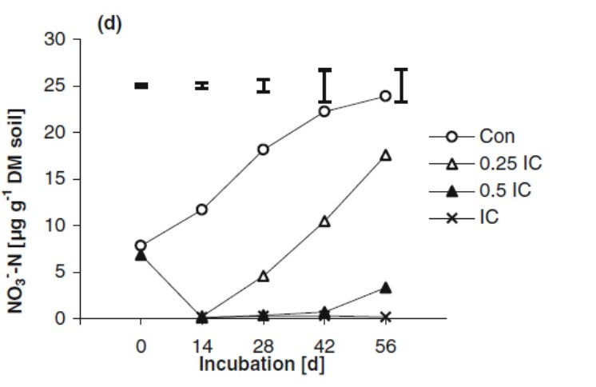
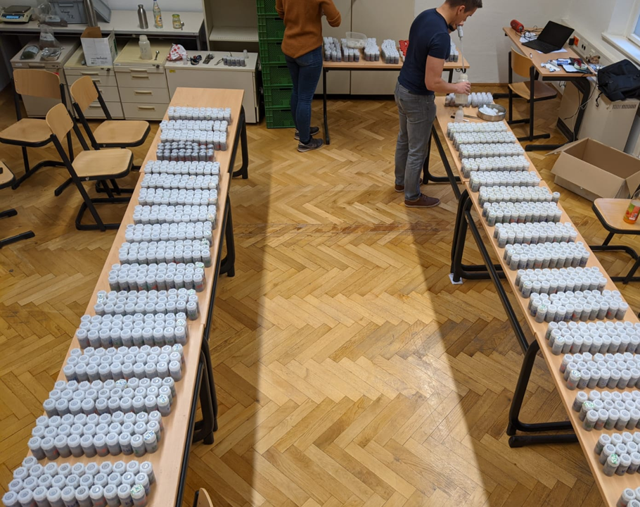
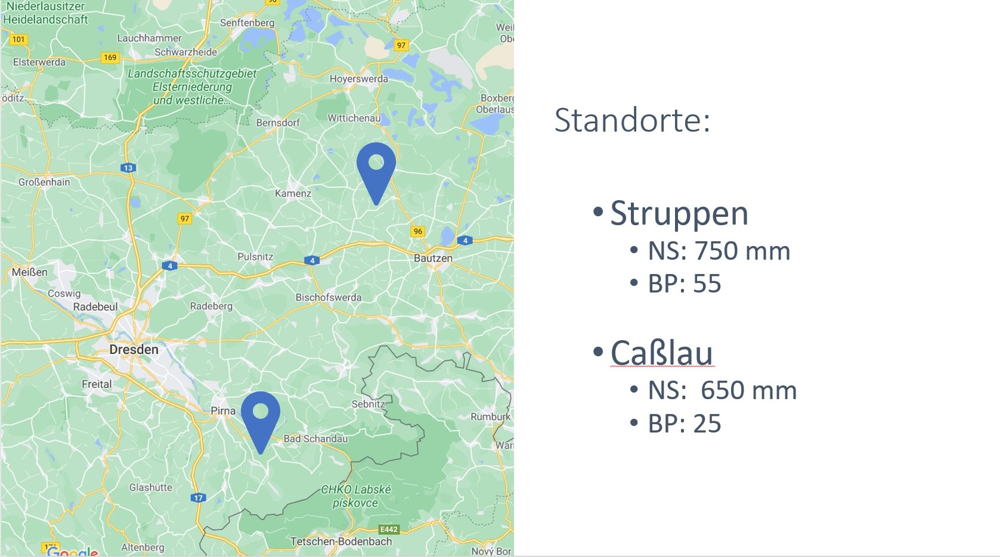

Niklifu
Florian Tröber
NiKliFu
Entwicklung nitrifikationshemmender und klimaresilienter Anbausysteme mit Futterleguminosen
Zielsetzung
Entwicklung neuartiger Futterleguminosengemenge mittels Integration von Spitzwegerich
⋅⋅* 1. Minimierung der Nitratverluste
⋅⋅* 2. höhere Ertragsleistung in Trockenperioden
Voruntersuchung

Abb. 1: Einfluss der Zugabe von Pflanzenpresssaft von Spitzwegerich auf die N-Mineralisation im Boden (Dietz et al. 2013)
Versuchsaufbau
2 Standorte
Randomisierte Blockanlage 4 WDH
Zwei Wiederholungen
- 2019 -
Column 1 Content
Column 2 Content
Versuchsvarianten
Versuchsvariante 2

Feldfutterbau
- Versuchsjahr
3 Erntetermine
Gesamtertrag
Ertrag Mischungspartner
N-Min 30cm
3 x N-Min bis 120cm
Getreideanbau
Inkubationsversuch
6 Entnahmetermine bei bis zu 120 Tage Inkubation
Versuchsstufen 6 Stickstoff-Stufen 5 Pflanzenmischungen 3 x Reinsaat: Weidelgras, Klee, Spitzwegerich 2 x Gemenge: 50/50 Spross/Wurzel

Standorte

Ertrag der Futterleguminosengemenge
Gravimetrischer Wasserhaushalt nach Futterleguminosenanbau
Nitrathaushalt im Weizen
Vorläufige Erkenntnisse Futterleguminosen
NiKliFu
- höhere Erträge des Spitzwegerichs bei Trockenstress
- Wasserzugrif des Spitzwegerichs in Tiefere Bodenschichten
- Bullet 3
Vorläufige Erkenntnisse Winterweizen
NiKliFu
- geringere Nitratgehalte bei Versuchsvarianten mit Spitzwegerich
- geringere Nitratverlagerung in Tiefere Bodenschichten bei Versuchsvarianten mit Spitzwegerich
- Bullet 3